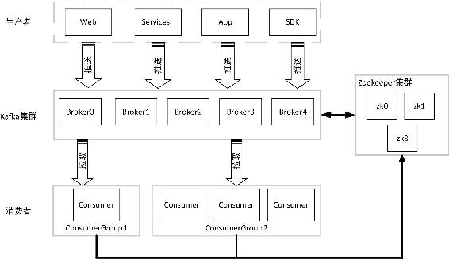

在对Kafka基本体系结构有了一定了解后，本节我们对Kafka的基本概念进行详细阐述。
Kafka将一组消息抽象归纳为一个主题（Topic），也就是说，一个主题就是对消息的一个分类。生产者将消息发送到特定主题，消费者订阅主题或主题的某些分区进行消费。
消息是Kafka通信的基本单位，由一个固定长度的消息头和一个可变长度的消息体构成。在老版本中，每一条消息称为Message；在由Java重新实现的客户端中，每一条消息称为Record。
Kafka将一组消息归纳为一个主题，而每个主题又被分成一个或多个分区（Partition）。每个分区由一系列有序、不可变的消息组成，是一个有序队列。
每个分区在物理上对应为一个文件夹，分区的命名规则为主题名称后接“—”连接符，之后再接分区编号，分区编号从0开始，编号最大值为分区的总数减1。每个分区又有一至多个副本（Replica），分区的副本分布在集群的不同代理上，以提高可用性。从存储角度上分析，分区的每个副本在逻辑上抽象为一个日志（Log）对象，即分区的副本与日志对象是一一对应的。每个主题对应的分区数可以在Kafka启动时所加载的配置文件中配置，也可以在创建主题时指定。当然，客户端还可以在主题创建后修改主题的分区数。
分区使得Kafka在并发处理上变得更加容易，理论上来说，分区数越多吞吐量越高，但这要根据集群实际环境及业务场景而定。同时，分区也是Kafka保证消息被顺序消费以及对消息进行负载均衡的基础。
Kafka只能保证一个分区之内消息的有序性，并不能保证跨分区消息的有序性。每条消息被追加到相应的分区中，是顺序写磁盘，因此效率非常高，这是Kafka高吞吐率的一个重要保证。同时与传统消息系统不同的是，Kafka并不会立即删除已被消费的消息，由于磁盘的限制消息也不会一直被存储（事实上这也是没有必要的），因此Kafka提供两种删除老数据的策略，一是基于消息已存储的时间长度，二是基于分区的大小。这两种策略都能通过配置文件进行配置，在这里不展开探讨，在3.5.4节将详细介绍。
由于Kafka副本的存在，就需要保证一个分区的多个副本之间数据的一致性，Kafka会选择该分区的一个副本作为Leader副本，而该分区其他副本即为Follower副本，只有Leader副本才负责处理客户端读/写请求，Follower副本从Leader副本同步数据。如果没有Leader副本，那就需要所有的副本都同时负责读/写请求处理，同时还得保证这些副本之间数据的一致性，假设有n个副本则需要有n×n条通路来同步数据，这样数据的一致性和有序性就很难保证。
引入Leader副本后客户端只需与Leader副本进行交互，这样数据一致性及顺序性就有了保证。Follower副本从Leader副本同步消息，对于n个副本只需n−1条通路即可，这样就使得系统更加简单而高效。副本Follower与Leader的角色并不是固定不变的，如果Leader失效，通过相应的选举算法将从其他Follower副本中选出新的Leader副本。
任何发布到分区的消息会被直接追加到日志文件（分区目录下以“.log”为文件名后缀的数据文件）的尾部，而每条消息在日志文件中的位置都会对应一个按序递增的偏移量。偏移量是一个分区下严格有序的逻辑值，它并不表示消息在磁盘上的物理位置。由于Kafka几乎不允许对消息进行随机读写，因此Kafka并没有提供额外索引机制到存储偏移量，也就是说并不会给偏移量再提供索引。消费者可以通过控制消息偏移量来对消息进行消费，如消费者可以指定消费的起始偏移量。为了保证消息被顺序消费，消费者已消费的消息对应的偏移量也需要保存。需要说明的是，消费者对消息偏移量的操作并不会影响消息本身的偏移量。旧版消费者将消费偏移量保存到ZooKeeper当中，而新版消费者是将消费偏移量保存到Kafka内部一个主题当中。当然，消费者也可以自己在外部系统保存消费偏移量，而无需保存到Kafka中。
一个日志又被划分为多个日志段（LogSegment），日志段是Kafka日志对象分片的最小单位。与日志对象一样，日志段也是一个逻辑概念，一个日志段对应磁盘上一个具体日志文件和两个索引文件。日志文件是以“.log”为文件名后缀的数据文件，用于保存消息实际数据。两个索引文件分别以“.index”和“.timeindex”作为文件名后缀，分别表示消息偏移量索引文件和消息时间戳索引文件。
在Kafka基本体系结构中我们提到了Kafka集群。Kafka集群就是由一个或多个Kafka实例构成，我们将每一个Kafka实例称为代理（Broker），通常也称代理为Kafka服务器（KafkaServer）。在生产环境中Kafka集群一般包括一台或多台服务器，我们可以在一台服务器上配置一个或多个代理。每一个代理都有唯一的标识id，这个id是一个非负整数。在一个Kafka集群中，每增加一个代理就需要为这个代理配置一个与该集群中其他代理不同的id，id值可以选择任意非负整数即可，只要保证它在整个Kafka集群中唯一，这个id就是代理的名字，也就是在启动代理时配置的broker.id对应的值，因此在本书中有时我们也称为brokerId。由于给每个代理分配了不同的brokerId，这样对代理进行迁移就变得更方便，从而对消费者来说是透明的，不会影响消费者对消息的消费。代理有很多个参数配置，由于在本节只是对其概念进行阐述，因此不做深入展开，对于代理相关配置将穿插在本书具体组件实现原理、流程分析及相关实战操作章节进行介绍。
生产者（Producer）负责将消息发送给代理，也就是向Kafka代理发送消息的客户端。
消费者（Comsumer）以拉取（pull）方式拉取数据，它是消费的客户端。在Kafka中每一个消费者都属于一个特定消费组（ConsumerGroup），我们可以为每个消费者指定一个消费组，以groupId代表消费组名称，通过group.id配置设置。如果不指定消费组，则该消费者属于默认消费组test-consumer-group。同时，每个消费者也有一个全局唯一的id，通过配置项client.id指定，如果客户端没有指定消费者的id，Kafka会自动为该消费者生成一个全局唯一的id，格式为${groupId}-${hostName}-${timestamp}-${UUID前8位字符}。同一个主题的一条消息只能被同一个消费组下某一个消费者消费，但不同消费组的消费者可同时消费该消息。消费组是Kafka用来实现对一个主题消息进行广播和单播的手段，实现消息广播只需指定各消费者均属于不同的消费组，消息单播则只需让各消费者属于同一个消费组。
Kafka在ZooKeeper中动态维护了一个ISR（In-sync Replica），即保存同步的副本列表，该列表中保存的是与Leader副本保持消息同步的所有副本对应的代理节点id。如果一个Follower副本宕机（本书用宕机来特指某个代理失效的情景，包括但不限于代理被关闭，如代理被人为关闭或是发生物理故障、心跳检测过期、网络延迟、进程崩溃等）或是落后太多，则该Follower副本节点将从ISR列表中移除。
这里我们并不打算介绍ZooKeeper的相关知识，只是简要介绍ZooKeeper在Kafka中的作用。Kafka利用ZooKeeper保存相应元数据信息，Kafka元数据信息包括如代理节点信息、Kafka集群信息、旧版消费者信息及其消费偏移量信息、主题信息、分区状态信息、分区副本分配方案信息、动态配置信息等。Kafka在启动或运行过程当中会在ZooKeeper上创建相应节点来保存元数据信息，Kafka通过监听机制在这些节点注册相应监听器来监听节点元数据的变化，从而由ZooKeeper负责管理维护Kafka集群，同时通过ZooKeeper我们能够很方便地对Kafka集群进行水平扩展及数据迁移。
通过以上Kafka基本概念的介绍，我们可以对Kafka基本结构图进行完善，如图1-2所示。

图1-2 Kafka的集群结构